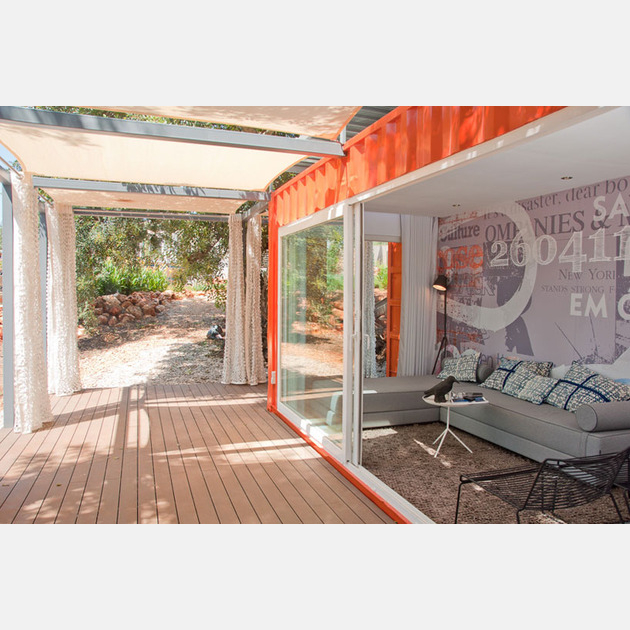

Home >> Recycling
What is Recycling?
Unless you have been on another planet for the last century, then you have probably heard of it. Recycling is the process of breaking down and re-using materials that would otherwise be thrown away as trash. Many communities and businesses make it easy to recycle by placing labeled containers in the open for public use, or providing bins for home and business owners who have curbside pickup.
There are numerous benefits to recycling, and with so many new technologies making even more materials recyclable, with everyone’s help we can clean up our Earth. Recycling not only benefits the environment but also have a positive effect on the economy.
Recycling is reported throughout human history but has come a long way since the time of Plato when humans re-used broken tools and pottery when materials were scarce. Today, there is a multitude of benefits that come from recycling as well as tons of items that can be recycled.
Shipping Container Guest House with Rooftop Garden.
This shipping container makes a fantastic guest house – with a roof garden to boot. And it’s a super sustainable design. From Poteet Architects, it sits in the sun in south San Antonio Texas. The rooftop garden is raised slightly off the top of the container. This way, not only does it provide shade but there is air flow to provide cooling during the hot Texas summer months. The interior is insulated with spray foam and walled with sustainable bamboo plywood (ditto the floors). Naturally, the gray water from sink and tub is recycled for the rooftop garden. And the toilet is a composting toilet. Not for everyone, but we are talking environmentally sound. And the entire container ‘floats’ on a pad of recycled telephone poles. But the best part – it’s a beautiful guest house, inside and out. Design and style, with a conscience. It just doesn’t get any better!
Rimrock Ranch House: Recycled, Reused and Naturally Cool.
Deep in the desert of Pioneertown, California, this simple sustainable house was designed by architect Lloyd Russell as the “ultimate desert structure.” A striking steel canopy makes up the home’s main shelter, under which the eco house design takes shape. The house is made of recycled materials, making the old new again, and beautiful too. An essential in the sandy hotspot, the innovative canopy house was designed to passively regulate the home’s temperature threefold – first, to reflect the sun’s rays and heat away from the home; second, to shade the house; and third, to act as a wind buffer, allowing the cooling breeze to blow through the structure. The 1,600-sq.-ft. main house features rusted corrugated-steel walls with contemporary, wide expanses of glass that slide open to bring the outdoors in and further cool interiors

Nomad Living, created out of a Shipping Container.
Studio Arte has been exploring the concept of nomadic living through their architectural practice and this shipping container retreat located in Algarve, Portugal is their first prototype. The home is a mobile, sustainable and economical getaway built to the local building code standards and is completely contained within one unit. The shipping container has been adjusted to include mechanical, engineering and architectural features in order to offer everything needed within a singular living space.
Manifesto House: Wood pallets + shipping containers.
Manifesto House, designed by Chilean architects and sustainable construction firm Infiniski, is a man-made marvel! Although it’s not totally prefabricated, this home in Curacavi, Chile is built using premade materials to allow for quick, cost-effective and sustainable construction. At a cost of just 79,000€, this eco home is made of two 40-ft. and two 20-ft. repurposed shipping containers
Recycled wooden pallets cladding the home’s exterior not only give the house a cool look and feel, but they also provide natural cooling via shade and ventilation.
Cool in more ways than one, this modern recycled home features spacious, airy interiors separated from the outdoors by sliding floor-to-ceiling windows.
Interiors are largely open concept, and feature a sleek minimalist interior design that’s as simple as the home’s concept as a whole. On the other side of the glass walls, an outdoor entertaining area sheltered by a large awning offers an al fresco living space. The sustainable house boasts geothermal heat pumps for heating and cooling.
Infiniski